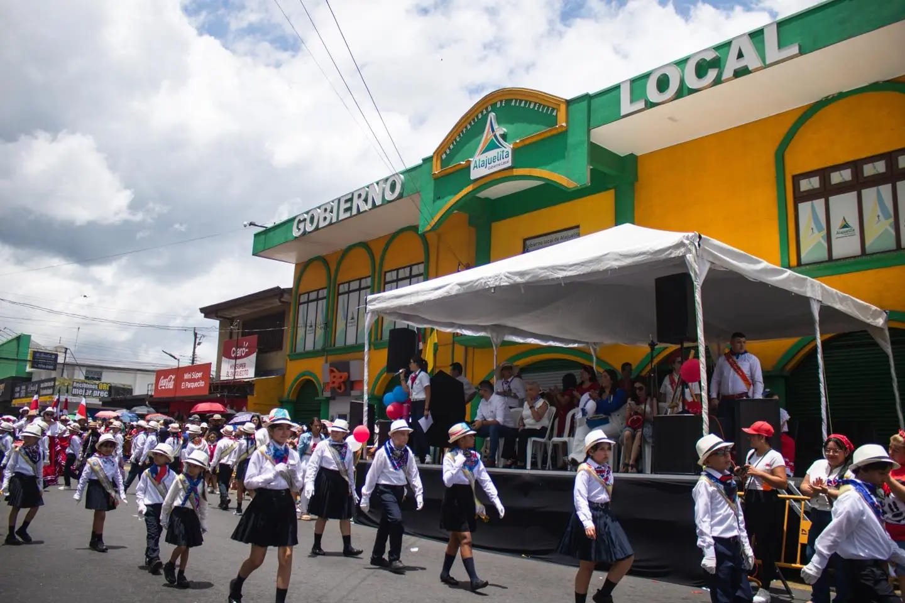

Alajuelita celebró los 204 años de vida independiente
Alajuelita celebró con fervor las fiestas patrias 2025, entre desfiles, actos cívicos y la emotiva entrega del fuego de independencia.
Alajuelita celebró con fervor las fiestas patrias 2025, entre desfiles, actos cívicos y la emotiva entrega del fuego de independencia.
La devoción religiosa al Santo Cristo de Esquipulas y tradiciones como la venta del chinchiví y los chanchitos de barro reflejan la identidad cultural de Alajuelita.


Alajuelita es un cantón densamente poblado con más de 81,000 habitantes, caracterizado por su diversidad y fuerte sentido de comunidad.
Alajuelita tiene sus orígenes en colonos mestizos del siglo XVII provenientes de Alajuela, atraídos por sus tierras fértiles y recursos naturales.

Entre sus curiosidades destacan el Cristo de Esquipulas, la bebida local Chinchiví y el Monumento de la Santa Cruz en el Cerro San Miguel.